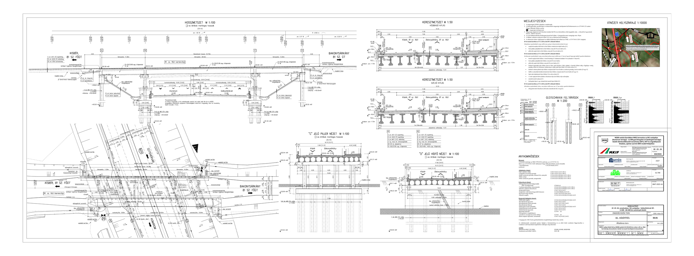
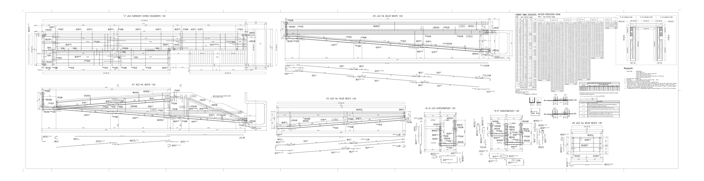
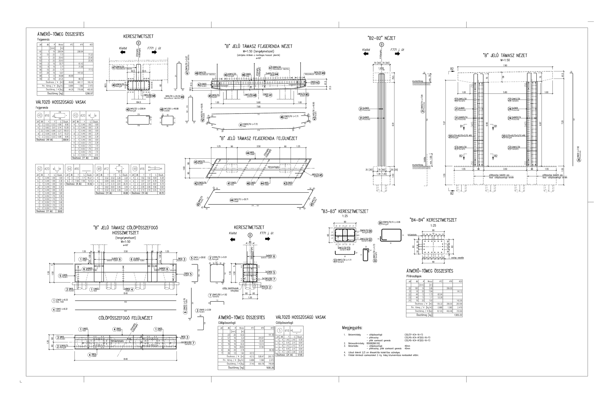

Legutóbbi referencia
2B117 hídépítési tervlap
Általános terv, hossz- és keresztmetszeti részletek, műszaki megjegyzésekkel.
PDF megnyitásaReferencia munkák
Válogatás olyan tervrajzokból, ahol a szerkezeti gondolkodás, a részletezés és a kivitelezhetőség együtt jelenik meg.

Általános terv, hossz- és keresztmetszeti részletek, műszaki megjegyzésekkel.
PDF megnyitása
Részletes vasalási elrendezések, nézetek, metszetek és tételes táblázatok.
PDF megnyitása
Támasz, fejgerenda, keresztmetszetek és átmérő-tömeg összesítések.
PDF megnyitása